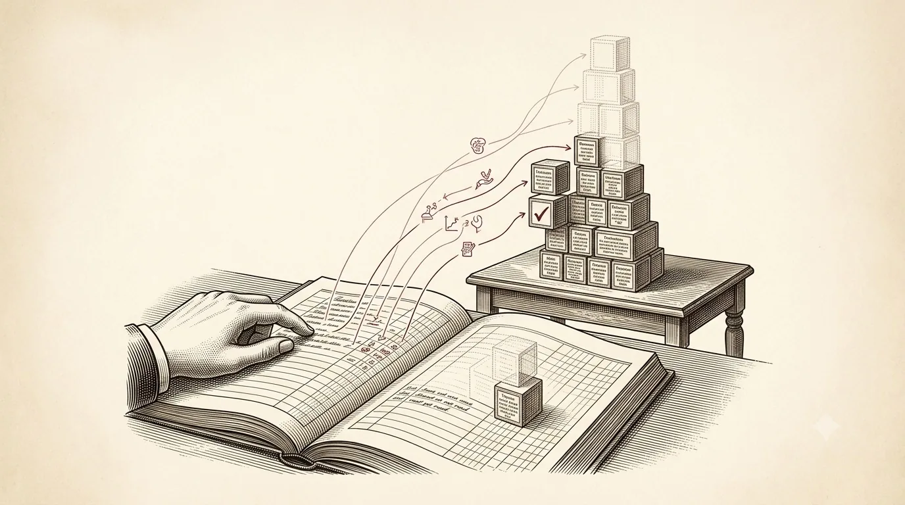

Chapter 03 · Rebuilding a Life
Checkpointing, Event Sourcing & Deterministic Replay
How a program that died in the middle wakes up knowing exactly where it was.
Last chapter we made a durable log for data. Now we do something bolder: we make a durable log for a program's progress — its place in the story, the results it has gathered, the branch it took. This is the heart of durable execution. When the machine dies mid-workflow, we do not restart from the beginning and hope; we reconstruct the exact state the program was in and carry on from there. There are two ways to do that reconstruction, and the good engines use both.
Two ways to remember: checkpoint and log
A checkpoint is a snapshot: you periodically write the whole current state to stable storage. To recover, load the latest snapshot. Simple, but coarse — if you snapshot every minute and crash at 59 seconds, you lose 59 seconds of work, and snapshotting a large state often is expensive.
Event sourcing takes the other road, and it is the ledger from Chapter 2 wearing new clothes. Instead of storing the current state, store the ordered sequence of events that produced it. The current state is not a thing you keep — it is a thing you compute, by folding the events from the start. Your bank balance is not a stored number; it is the sum of every deposit and withdrawal, in order. Lose the balance and you recompute it. The events are the truth; the state is derived.
Pure replay-from-zero gets slow as the history grows; pure checkpointing is coarse and heavy. So real systems checkpoint occasionally and log the deltas continuously: recover by loading the last checkpoint, then replaying only the events since. This is precisely ARIES again — the checkpoint bounds how far back Redo must scan. The same idea, one layer up: a snapshot to stand on, a log to finish the climb.

A warm, scholarly engraved illustration in classic printed-book style on aged paper (cream, sepia, single oxblood-red accent). A hand runs a finger down the ruled lines of an open ledger; from each line, an action rises to rebuild a small tower of labelled blocks on a table, reconstructed exactly as a faded 'ghost' outline shows it once stood. The bottom lines are not yet read and the top blocks are still faint/half-formed — the rebuild in progress. One block bears a small tick: a completed step whose result is remembered, not redone. Fine cross-hatch engraving, restrained, no readable text baked in. ~1280×720px, 16:9 landscape, centred with safe margins.
Generate this with your image agent, then drop the file here.
The trick: run the code, but honour the record
Here is the move that makes durable execution feel like magic, told without the magic. An engine like Temporal writes your workflow as ordinary code — a function that calls out to steps (it names them activities). Every meaningful thing that happens is appended to a durable event history held on the server: the workflow started, an activity was scheduled, an activity completed with this result, a timer fired. That history is the log, and it is never lost.
Now the machine running your workflow dies. A fresh worker picks it up and does something that sounds absurd at first: it runs your workflow function again, from the top. But it runs it against the history. When your code reaches the line that charges the card, the engine does not charge the card again — it looks in the history, finds "charge activity completed = ok," and hands that recorded result straight back to your code as if the call had just returned. Your code doesn't know it's a rerun. It walks the same path, making the same decisions, until it reaches the last recorded event — and there, at the frontier, it continues live, doing genuinely new work. The state was rebuilt not by loading it, but by re-deriving it from the log.
the same function, run twice — once live, once as replaydef onboard(user):
charge = activity(charge_card, user) # history: completed = ok → NOT re-run on replay
sleep(24 * 3600) # history: timer fired → already elapsed on replay
ship = activity(ship_kit, user) # history: completed = ok → remembered, not repeated
return {"charged": charge, "shipped": ship}
# Replay walks charge → sleep → ship using RECORDED results,
# then continues live from the first event the history doesn't have yet.
The price of admission: determinism
This beautiful trick has one hard condition, and it is the thing people
stub their toe on. For replay to reconstruct the same state, the workflow code must be
deterministic: given the same history, it must take the same path and issue the
same commands in the same order. If, on the original run, your code branched on
rand() or on the wall clock or on some value it read directly from a database, then on
replay those would come out different — the code would take a different branch than the
history records, and the reconstruction would be nonsense.
Inside workflow code, do not read the clock, do not roll dice, do not reach out to the network or the database directly. Every one of those is a value that differs between the first run and the replay, and any of them will break the reconstruction — engines will even raise a non-determinism error and refuse to continue. The discipline: push all of that outside, into activities (whose results get recorded), or ask the engine for the time and the random number so that it records them in the history. Then replay sees the same values the original run did, because it is literally reading them back off the log.
And what about the day you fix a bug in the workflow code, while old executions are still out there mid-flight, carrying histories written by the previous version? Change the shape of the code and replay may diverge from the history it is being replayed against. This is a real operational hazard, and the engines answer it with versioning (Temporal calls the mechanism patching): the code asks "am I running an old history or a new one?" and takes the matching branch, so histories written under the old logic keep replaying the old logic. It is exactly the discipline of a schema migration, applied to control flow.
Replay is cheap because it does no real work: activities aren't re-run, they're read from history — so replaying a workflow with 200 events is a couple hundred hand-backs from a list, microseconds each, not 200 network calls. That asymmetry is the whole economic argument: the expensive things happen once and are remembered; the cheap re-derivation happens as often as crashes demand.
Think it through
- Find one
Date.now()orrand()hidden in orchestration code you own. Ask: if I re-ran this function against a recorded history, would that line give the same answer? If not, it belongs in an activity. - Take a small aggregate you keep as a stored number (a counter, a balance). Rewrite it, on paper, as an event log plus a fold. Notice you can now audit why it holds any value.
- Explain to a colleague why an engine re-runs the whole workflow function on recovery instead of serialising and reloading local variables. (Hint: which is easier to keep correct across a code change — a snapshot of raw memory, or a replay of decisions?)